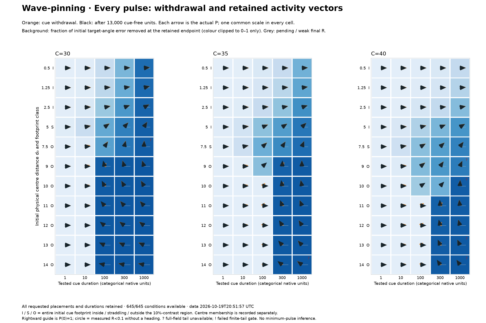
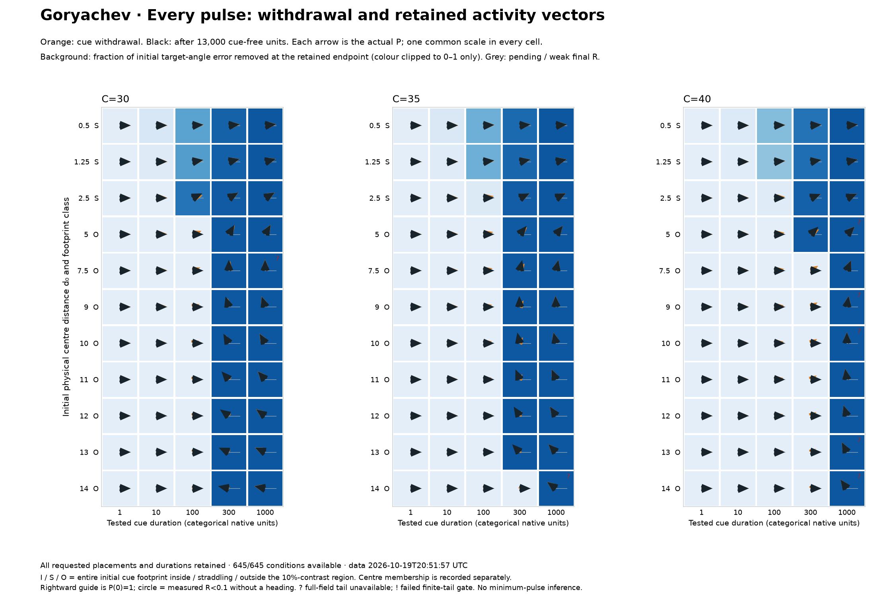
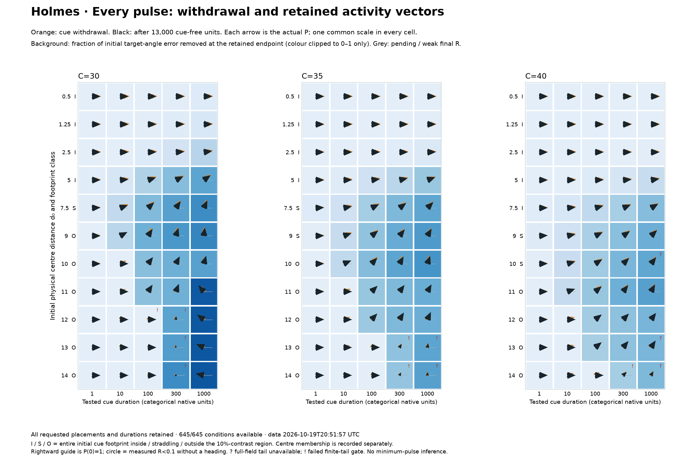
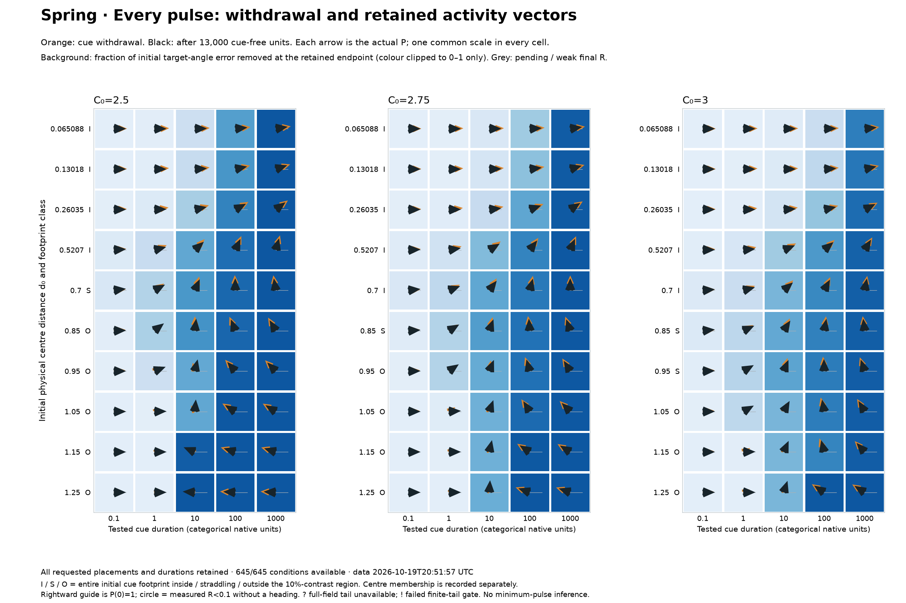

Complete stationary-cue experiment supplement
Figure 3 · narrow native size range, denser common initial physical arc grid.
Generated 2026-10-19T20:54:12.465326+00:00. Authoritative collector: 2026-10-19T20:51:57.811009+00:00. Scientific report and compact examples · All initial profiles and cue footprints.
Coverage: 645 / 645 requested conditions. All 645 native outcomes are present in this readout snapshot. Native terminal validation and independent checks remain separate evidence receipts; the scientific report records their current state. The design contains 175 proved exact reuses and 470 fresh branches; all initial overlaps remain included. Cue-on reorientation is the main experimental readout. Cue-free endpoints provide separate finite-horizon context.
Every condition: choose the quantity
Grey: pending, unavailable quantity, or excluded by the selected footprint filter. Exact values below remain unclipped. Duration columns are tested categories, not uniformly spaced elapsed time. R is a moment-magnitude ratio; it can exceed one.
Wave-pinning
Readable core supplement: 5 pages · Full native-profile appendix: 15 pages · Combined archive PDF

Cue-on response / coverage matrices · Amount and original-region matrices · Finite endpoint organization matrices · All longest-cue histories
Goryachev
Readable core supplement: 5 pages · Full native-profile appendix: 15 pages · Combined archive PDF

Cue-on response / coverage matrices · Amount and original-region matrices · Finite endpoint organization matrices · All longest-cue histories
Holmes
Readable core supplement: 5 pages · Full native-profile appendix: 15 pages · Combined archive PDF

Cue-on response / coverage matrices · Amount and original-region matrices · Finite endpoint organization matrices · All longest-cue histories
Spring
Readable core supplement: 5 pages · Full native-profile appendix: 15 pages · Combined archive PDF

Cue-on response / coverage matrices · Amount and original-region matrices · Finite endpoint organization matrices · All longest-cue histories
Definitions and interpretation limits
Mn(t) = C(t)〈u(q,t)e2πinq〉, P(t) = M1(t)/M1(0), R(t) = |P(t)|.
The raw physical moment uses fixed ring reference axes. Complex division by the initial first moment rotates the normalized P axes once, so P(0)=1. Activity-vector phase is a global concentration-weighted normal direction. It is not cell velocity, peak travel, or molecular/site ancestry.
Error removed = 1 − |wrap(φ − θ*)| / |wrap(−θ*)|.
The actual target θ* includes the measured initial first-moment offset from the declared preparation axis. Phase-dependent values are unavailable when R<0.1. Negative error-removal values are retained in the table; only figure background colours are clipped to 0–1. This endpoint measure is not trajectory speed or a binary success criterion.
Sampled angular secants use their actual left/right saved times; weak endpoint R creates gaps and no phase is unwrapped across them. Exact-antipodal angular rates are withheld. Near-antipodal vectors require their magnitude and profiles. Selected native RHS rates are available only where the actual full state is retained; inactive fields are never inferred for legacy primary-only histories. Initial rate differences can arise from the angular projection of the finite-width input and the initial moment magnitude, without demonstrating incumbent remodeling.
The initial 50%/10% edges are linearly interpolated min-plus-contrast thresholds. Cue-centre membership and whole-footprint intersection are separate. I/S/O are spatial readout classes, not demonstrated internal causal pathways. Spring uses the qualified native mean-force global-extension closure: the material cue centre stays fixed while its physical arc changes with C(t), and its full physical support stays 0.2. Other native supports are 3; native clocks are not calibrated across models.
Original-region excess integrates the fixed initial material region and subtracts the transported initial background amount. Its decrease can reflect redistribution; entry times are sampled brackets with right censoring and rebound context. They do not prove site death or provide refined minimum effective pulse durations. Final profiles are measured after 13,000 cue-free units; a passing finite-tail gate and an unavailable full-field tail are distinct from an asymptotic claim.
Earlier complete broad-size fixed-arc arm · Earlier complete fixed-angle arm · Preserved paired-arm vector review. These preceding designs remain distinct; none is silently relabelled as fresh narrow-grid data.